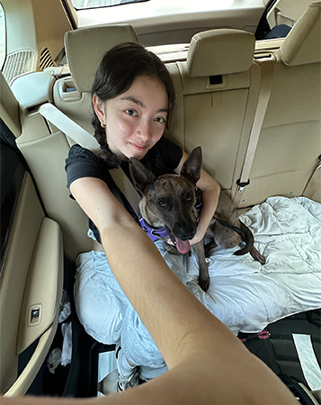

I have two dogs, Mocha and Ellie. Growing up with dogs since I was young, I actually wanted to be a veterinarian for a long time. It seems my love for dogs will just have to stay within the confines of being a “dog mom.”